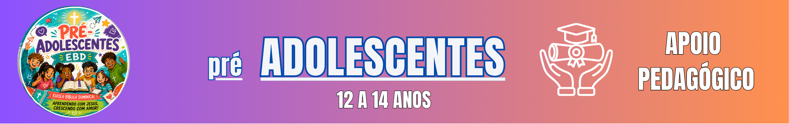

SANTIFICANDO-SE EM TUDO

TEXTO BÍBLICO: 1Pe 1.13-16; Ef 4.22-24
MENSAGEM VALIOSA: “O mesmo Deus de paz vos santifique em tudo; e todo o vosso espírito, e alma, e corpo sejam plenamente conservados irrepreensíveis”, 1Ts 5.23
VERDADE APLICADA: Os adolescentes devem dedicar-se a Deus e glorificá-lO pelo bom testemunho diário.
INTRODUÇÃO: Na introdução, a lição fala sobre santificação como uma caminhada de pertença a Deus. Ser santo não significa parecer perfeito ou afastar-se de todas as pessoas; significa aprender a viver segundo o caráter do Senhor. Primeira Pedro 1.15-16 relaciona a conduta do cristão à santidade daquele que o chamou.
Escolhas que parecem pequenas também revelam valores. Uma mensagem enviada em grupo, a maneira de responder a uma provocação e o cuidado com a verdade são oportunidades de exercitar a fé. Deus nos chama a crescer, reconhecendo erros e buscando transformação em vez de fingir que não precisamos aprender.
PERGUNTAS DE ABERTURA
1. SANTIFIQUE-SE!: Neste tópico, a lição aborda a dedicação da vida ao Senhor. Em vez de tratar a santidade como uma lista de aparências, a Bíblia apresenta uma mudança que alcança pensamento, palavras e atitudes. Efésios 4.22-24 fala de abandonar o velho modo de viver e revestir-se de um novo.
Isso se torna concreto quando alguém decide não espalhar uma humilhação, mesmo que todos estejam comentando, ou quando procura reparar um erro. A santificação não é motivo para sentir-se superior aos colegas; é um convite à humildade e à responsabilidade diante de Deus.
APOIO PEDAGÓGICO — TÓPICO 1
Escreva situações hipotéticas: receber uma fofoca, copiar a tarefa e responder a uma ofensa. Peça que a turma compare possíveis escolhas à orientação de Efésios 4.22-24. Diferencie santidade de superioridade moral, preservando a liberdade de não relatar experiências pessoais.
APLICAÇÃO PRÁTICA — TÓPICO 1: Durante a semana, observe uma conversa em que normalmente responderia por impulso. Pare, escolha palavras respeitosas e, se errar, peça desculpas de forma simples.
2. CHAMADOS À SANTIFICAÇÃO: Neste tópico, a lição aborda o chamado para viver entre as pessoas sem adotar toda prática ao redor. Jesus conviveu com pessoas diferentes sem abandonar a verdade. O testemunho cristão é percebido quando há coerência entre o que se crê e a maneira de tratar o próximo.
Ser diferente por fidelidade a Deus não autoriza zombar de quem escolhe de outra forma. O adolescente pode recusar uma proposta inadequada com serenidade e continuar tratando os colegas com dignidade. A santificação alcança tanto a decisão quanto a forma amorosa de comunicá-la (1Pe 1.15).
APOIO PEDAGÓGICO — TÓPICO 2
Proponha respostas breves para um convite à cola ou à ridicularização de alguém. Compare uma recusa agressiva com uma recusa firme e respeitosa. Reforce que santidade não exige isolamento social nem exposição pública das falhas de outros.
APLICAÇÃO PRÁTICA — TÓPICO 2: Durante a semana, pratique uma recusa respeitosa diante de algo contrário aos seus valores ou apoie discretamente alguém que esteja sendo tratado com desrespeito.
3. ACEITANDO O DESAFIO: Neste tópico, a lição aborda a decisão de permanecer fiel sob pressão. Daniel e seus amigos enfrentaram mudanças profundas, mas buscaram honrar a Deus no ambiente em que estavam (Dn 1.8). O exemplo deles mostra que convicções podem orientar decisões práticas.
Nem sempre a coragem faz barulho. Às vezes, ela aparece ao admitir que não sabe uma resposta, evitar uma mentira ou pedir ajuda a um adulto responsável diante de uma situação difícil. Deus nos forma em escolhas repetidas, não em demonstrações para impressionar outras pessoas.
APOIO PEDAGÓGICO — TÓPICO 3
Conte brevemente a escolha de Daniel em Daniel 1.8 e peça que os alunos identifiquem convicção, prudência e respeito. Trabalhe exemplos cotidianos sem estimular desafios perigosos ou confronto desnecessário com adultos. Diferencie firmeza de arrogância.
APLICAÇÃO PRÁTICA — TÓPICO 3: Durante a semana, escolha uma decisão que exija honestidade, como realizar uma atividade escolar com seus próprios recursos, e leve-a até o fim.
CONCLUINDO: No encerramento, a lição reforça que a santificação é resposta ao chamado de um Deus santo. Ela envolve o coração, a convivência e as escolhas feitas longe dos olhares.
É possível aprender com Daniel a ser fiel sem desprezar as pessoas. Quando houver erro, a resposta não é esconder-se, mas buscar a Deus, reconhecer o que aconteceu e voltar ao caminho da obediência.
SÍNTESE DA LIÇÃO: Santidade se percebe em escolhas fiéis e amorosas a cada dia.
Caça-palavras da lição
Encontre as oito palavras relacionadas ao tema da lição.
Na tela, selecione a primeira e a última letra de cada palavra. Na impressão, marque as palavras com lápis.
| G | K | P | W | X | I | M | G | K | E | N | P | V | I | I |
| H | V | L | Y | X | O | D | D | T | S | G | U | B | N | J |
| N | C | O | R | A | C | A | O | G | C | C | N | I | C | E |
| G | H | Z | L | U | R | N | W | F | O | A | M | N | X | S |
| J | Y | J | D | R | O | K | U | K | L | J | D | W | M | U |
| P | U | R | E | Z | A | B | D | I | H | K | A | I | R | S |
| F | N | E | U | U | H | F | E | G | A | M | P | T | V | Y |
| O | J | Y | H | M | C | G | O | D | S | Y | N | T | D | H |
| F | G | D | N | S | H | A | T | B | I | X | L | N | R | G |
| F | L | D | A | T | W | H | I | P | Q | E | L | Q | N | D |
| C | Q | N | V | G | D | H | R | Q | E | P | N | Q | Y | L |
| Y | T | L | X | X | H | F | I | M | P | Q | N | C | P | X |
| O | N | L | U | A | V | F | P | M | W | Q | B | E | I | O |
| A | Z | V | Z | V | N | I | S | S | E | S | T | F | P | A |
| Y | F | O | N | A | E | X | E | P | E | Y | H | S | M | B |
Palavras para encontrar
- SANTO
- PUREZA
- ESCOLHAS
- ESPIRITO
- JESUS
- CORACAO
- OBEDIENCIA
- VIDA
0 de 8 palavras encontradas.